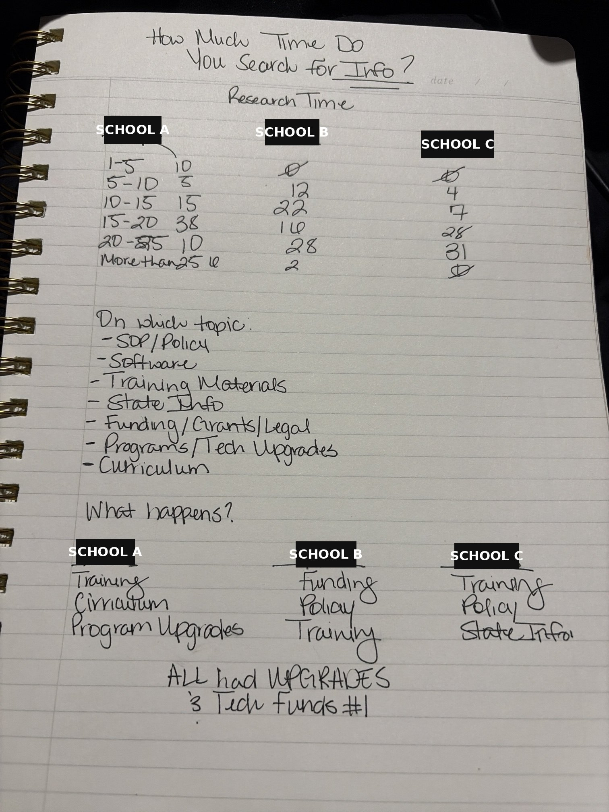
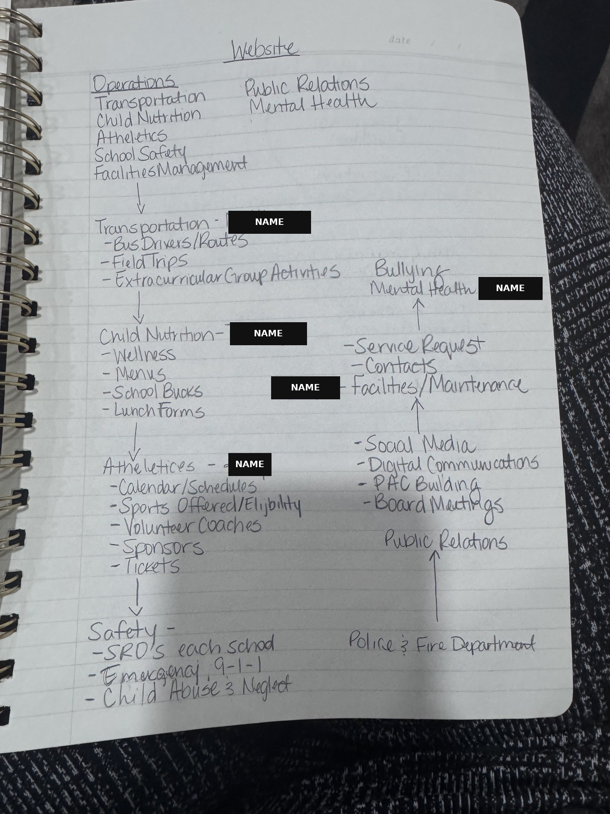

Where It Started
An onboarding failure. A new hire could not get the access they needed, and tracing why exposed that nobody could say who owned the step that had broken. About a month into the job I wrote a district-wide technology plan and pitched it to the chief school financial officer and the curriculum director. Before pitching it, I went and asked.
The Research
I walked all three buildings and asked one question: how much time do you spend searching for information, and on what. 234 staff answered, tallied by hand in five-minute bands.
Original · my notebook

Transcription
| Minutes spent searching | School A | School B | School C | Total |
|---|
| 1–5 | 10 | 0 | 0 | 10 |
| 5–10 | 5 | 12 | 4 | 21 |
| 10–15 | 15 | 22 | 7 | 44 |
| 15–20 | 38 | 16 | 28 | 82 |
| 20–25 | 10 | 28 | 31 | 69 |
| More than 25 | 6 | 2 | 0 | 8 |
| Responses | 84 | 80 | 70 | 234 |
Topics named: SOP and policy · software · training materials · state information · funding, grants and legal · programs and tech upgrades · curriculum.
Top three needs by building: School A — training, curriculum, program upgrades. School B — funding, policy, training. School C — training, policy, state information. Noted at the bottom in my own shorthand: all three had recent upgrades, and tech funding ranked first.
What I will not claim from this sheet. It records no date, and it does not record whether the question asked per day or per week — so no aggregate hours figure appears anywhere on this site. Weighting each band at its midpoint gives roughly 17 minutes per person. That is a method applied to a tally, not a measurement, and it is labeled as such.
What the Tally Actually Told Me
Three quarters of responses fell between ten and twenty-five minutes, and the heaviest bands were the upper ones. But the finding that changed the plan was at the bottom of the page: all three buildings had recently received upgrades.
The problem was not that people lacked tools. It was that they could not find anything.
And the topics confirmed it. SOP and policy, training materials, state information — the top categories were documentation, not software. Training appeared in the top three at every single building.
- What I was investigating
- Whether the district's technology problem was a tooling problem or something else.
- What the evidence shows
- 234 responses concentrated in the 15–25 minute bands, documentation topics dominating, training in the top three at all three buildings, and recent upgrades everywhere.
- What I learned
- Buying more would not have helped. The district had tools and no way to find, own or explain them.
- What it changed
- The pitch stopped being a purchasing request and became a governance one: document, assign ownership, then automate. That ordering is the sequence CORE runs in.
- How it shows up in operations
- The communication cadence exists because of this page. Monthly check-ins with every department, and a newsletter where every issue goes out with a resolution and a timeline attached — because the research said people could not get answers, so the fix had to be a standing channel that delivers them.
Gap Analysis
What Existed, What Was Missing, What It Became
Each pillar answers a gap the research found. None of them was a missing tool.
DomainWhat ExistedThe GapBecame
Communication
Issues raised in meetings and in hallways
Nothing carried an issue through to a named resolution and a date
01 · Culture & Communication
Process
Every function running, staff wearing many hats
An onboarding failure traced to a step nobody owned; more than fourteen direct reports
02 · Operations & Workflow Governance
Records
Several systems holding staff and student records
No authoritative record when two systems disagreed
03 · Rostering, Identity & Data
Follow-through
Tools already purchased and in place
234 responses said the problem was finding things, not lacking them — and nothing checked whether a change held
04 · Execution & Measurement
The Four Pillars
Deliberately ordered. Each one is a precondition for the next, which is why AI adoption sits at the end rather than the beginning.
C01Culture & Communication
A standing channel between technology and every department, with resolutions and timelines attached to issues rather than status for its own sake.
O02Operations & Workflow Governance
The pillar I own outright. Processes documented, owners named, escalation paths defined before anything is automated.
R03Rostering, Identity & Data
Who exists in which system, who provisions them, and which record is authoritative when two systems disagree.
E04Execution & Measurement
Whether any of it held. The phase where AI adoption becomes reasonable, because there is now something stable to automate.
What the Structure Work Found
The district had no real org structure. Staff described themselves as wearing many hats, and the discovery bore that out: more than fourteen direct reports to a single position, eight roles that had been combined without the position descriptions changing, and seventeen functions with no owner at all. That inventory became the governance model the board adopted.
Original · my notebook

Ownership, Worked Out on Paper
This looks like a website plan. It is an ownership map wearing a website plan's clothes.
Rebuilding the district site meant every section needed someone accountable for its content. Which meant naming an owner for Transportation, Child Nutrition, Athletics, School Safety, Facilities Management, Public Relations and Mental Health — and discovering, function by function, which ones had nobody.
The arrows are the part that mattered. Each area broken into what it actually publishes — bus routes and field trips, menus and lunch forms, schedules and eligibility and volunteer coaches, service requests and contacts — then traced to a person who could answer for it. A section with no arrow was a function with no owner.
Staff names redacted. The structure is the evidence; the individuals are not mine to publish.
Approved, Implemented, and Measured Are Three Different Things
CORE was pitched, revised with district leadership, and adopted by the board. That is approval. Implementation is in progress and varies by pillar — communication and workflow governance are running; rostering, identity and data and the measurement phase are not complete. No adoption outcome is claimed for any pillar, and the district's own measurement is not mine to publish.
Verified
234 staff responses on the sheet above. Board adoption of the operating model. The monthly department cadence and resolution-and-timeline newsletter in operation. The structure inventory and its findings.
Not Claimed
Completed implementation of any pillar. Time saved. Adoption rate. Any outcome attributed to CORE.
What I Don't Own
Executive sponsorship, board adoption and every approval sat elsewhere. I recommended role and salary structure changes during the structure work and handed the walkthrough to HR; I cannot approve those and did not.